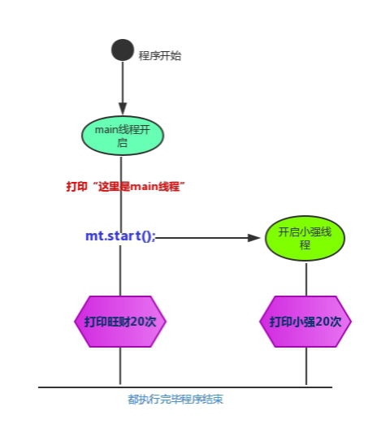
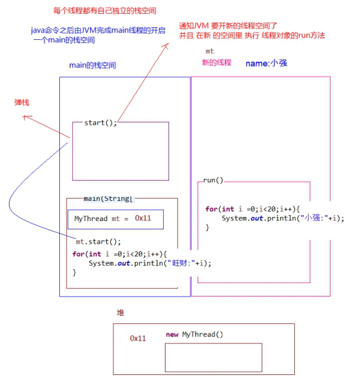
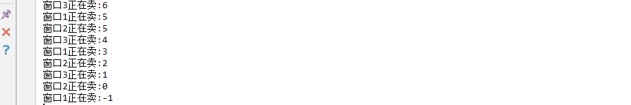
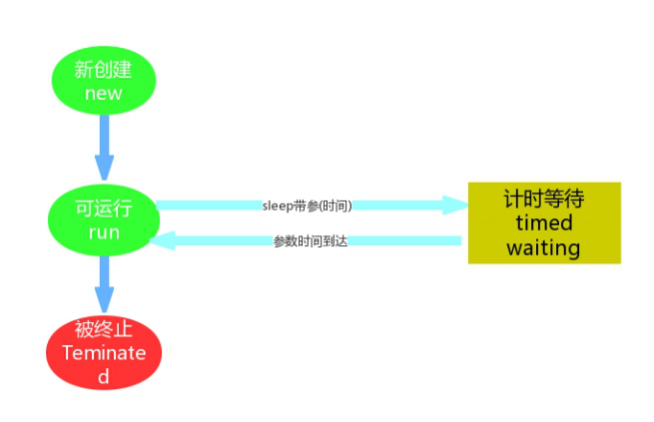
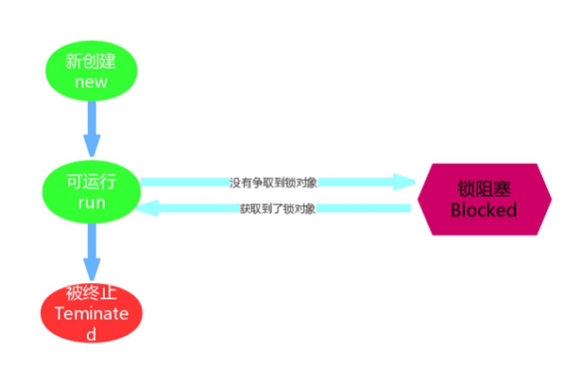
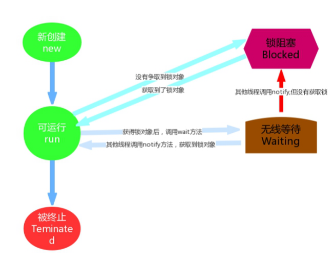
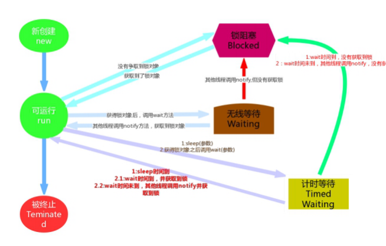

day06 【线程、同步】主要内容教学目标第一章 线程1.1 多线程原理1.2 Thread类1.4 Thread和Runnable的区别1.5 匿名内部类方式实现线程的创建第二章 线程安全2.1 线程安全2.2 线程同步2.3 同步代码块2.4 同步方法第三章 线程状态3.1 线程状态概述3.2 Timed Waiting（计时等待）3.3 BLOCKED（锁阻塞）3.4 Waiting（无限等待）3.5 补充知识点
能够描述Java中多线程运行原理
能够使用继承类的方式创建多线程
能够使用实现接口的方式创建多线程
能够说出实现接口方式的好处
能够解释安全问题的出现的原因
能够使用同步代码块解决线程安全问题
能够使用同步方法解决线程安全问题
能够说出线程6个状态的名称
昨天的时候我们已经写过一版多线程的代码，很多同学对原理不是很清楚，那么我们今天先画个多线程执行时序图 来体现一下多线程程序的执行流程。 代码如下： 自定义线程类：
public class MyThread extends Thread{ /* * 利用继承中的特点 * 将线程名称传递 进行设置 */ public MyThread (String name){ super(name); } /* * 重写run方法 * 定义线程要执行的代码 */ public void run(){ for (int i = 0; i < 20;i++) { //getName()方法 来自父亲 //getName() 方法 来自父亲 System.out.println (getName ()+i); } }}测试类：
xxxxxxxxxxpublic class Demo { public static void main(String[] args) { System.out.println("这里是main线程"); MyThread mt = new MyThread("小强"); mt.start();//开启了一个新的线程 for (int i = 0; i < 20; i++) { System.out.println("旺财:"+i); } } }流程图： 
程序启动运行main时候，java虚拟机启动一个进程，主线程main在main()调用时候被创建。随着调用mt的对象的start方法，另外一个新的线程也启动了，这样，整个应用就在多线程下运行。 通过这张图我们可以很清晰的看到多线程的执行流程，那么为什么可以完成并发执行呢？我们再来讲一讲原理。 多线程执行时，到底在内存中是如何运行的呢？以上个程序为例，进行图解说明： 多线程执行时，在栈内存中，其实每一个执行线程都有一片自己所属的栈内存空间。进行方法的压栈和弹栈。  当执行线程的任务结束了，线程自动在栈内存中释放了。但是当所有的执行线程都结束了，那么进程就结束了。
在上一天内容中我们已经可以完成最基本的线程开启，那么在我们完成操作过程中用到了 java.lang.Thread 类，API中该类中定义了有关线程的一些方法，具体如下： 构造方法：
常用方法：
翻阅API后得知创建线程的方式总共有两种，一种是继承Thread类方式，一种是实现Runnable接口方式，方式一我 们上一天已经完成，接下来讲解方式二实现的方式。 1.3 创建线程方式二 采用 java.lang.Runnable 也是非常常见的一种，我们只需要重写run方法即可。 步骤如下：
代码如下：
xxxxxxxxxxpublic class MyRunnable implements Runnable{ public void run() { for (int i = 0; i < 20; i++) { System.out.println(Thread.currentThread().getName()+" "+i); } } }xxxxxxxxxxpublic class Demo { public static void main(String[] args) { //创建自定义类对象 线程任务对象 MyRunnable mr = new MyRunnable(); //创建线程对象 Thread t = new Thread(mr, "小强"); t.start(); for (int i = 0; i < 20; i++) { System.out.println("旺财 " + i); } } }通过实现Runnable接口，使得该类有了多线程类的特征。run()方法是多线程程序的一个执行目标。所有的多线程代码都在run方法里面。Thread类实际上也是实现了Runnable接口的类。
在启动的多线程的时候，需要先通过Thread类的构造方法Thread(Runnable target) 构造出对象，然后调用Thread对象的start()方法来运行多线程代码。
实际上所有的多线程代码都是通过运行Thread的start()方法来运行的。因此，不管是继承Thread类还是实现 Runnable接口来实现多线程，最终还是通过Thread的对象的API来控制线程的，熟悉Thread类的API是进行多线程 编程的基础。
tips:Runnable对象仅仅作为Thread对象的target，Runnable实现类里包含的run()方法仅作为线程执行体。 而实际的线程对象依然是Thread实例，只是该Thread线程负责执行其target的run()方法。
如果一个类继承Thread，则不适合资源共享。但是如果实现了Runable接口的话，则很容易的实现资源共享。
总结：
实现Runnable接口比继承Thread类所具有的优势：
xxxxxxxxxx1.适合多个相同的程序代码的线程去共享同一个资源。2.可以避免java中的单继承的局限性。3.增加程序的健壮性，实现解耦操作，代码可以被多个线程共享，代码和线程独立。4.线程池只能放入实现Runable或Callable类线程，不能直接放入继承Thread的类。
扩充：在java中，每次程序运行至少启动2个线程。一个是main线程，一个是垃圾收集线程。因为每当使用java命令执行一个类的时候，实际上都会启动一个JVM，每一个JVM其实在就是在操作系统中启动了一个进程。
使用线程的内匿名内部类方式，可以方便的实现每个线程执行不同的线程任务操作。 使用匿名内部类的方式实现Runnable接口，重新Runnable接口中的run方法：
xxxxxxxxxxpublic class NoNameInnerClassThread { public static void main(String[] args) { // new Runnable(){ // public void run(){ // for (int i = 0; i < 20; i++) {// System.out.println(" 张宇:"+i);// }// } // }; //‐‐‐这个整体 相当于new MyRunnable() Runnable r = new Runnable(){ public void run(){ for (int i = 0;i < 20;i++) { System.out.println("张宇:"+i); } } }; new Thread(r).start(); for (int i = 0;i < 20;i++) { System.out.println ("费玉清:"+i); } }}如果有多个线程在同时运行，而这些线程可能会同时运行这段代码。程序每次运行结果和单线程运行的结果是一样 的，而且其他的变量的值也和预期的是一样的，就是线程安全的。
我们通过一个案例，演示线程的安全问题：
电影院要卖票，我们模拟电影院的卖票过程。假设要播放的电影是 “葫芦娃大战奥特曼”，本次电影的座位共100个 (本场电影只能卖100张票)。
我们来模拟电影院的售票窗口，实现多个窗口同时卖 “葫芦娃大战奥特曼”这场电影票(多个窗口一起卖这100张票) 需要窗口，采用线程对象来模拟；需要票，Runnable接口子类来模拟
模拟票：
xxxxxxxxxxpublic class Ticket implements Runnable { private int ticket = 100; /* * 执行卖票操作 */ public void run() { //每个窗口卖票的操作 //窗口 永远开启 while (true) { if (ticket > 0) {//有票 可以卖 //出票操作 //使用sleep模拟一下出票时间 try { Thread.sleep(100); } catch (InterruptedException e) { // TODO Auto‐generated catch block e.printStackTrace(); } //获取当前线程对象的名字 String name = Thread.currentThread ().getName(); System.out.println (name + "正在卖:" + ticket‐‐); } } }}测试类：
xxxxxxxxxxpublic class Demo { public static void main(String[] args) { //创建线程任务对象 Ticket ticket = new Ticket(); //创建三个窗口对象 Thread t1 = new Thread(ticket, "窗口1"); Thread t2 = new Thread(ticket, "窗口2"); Thread t3 = new Thread(ticket, "窗口3"); //同时卖票 t1.start(); t2.start(); t3.start(); } }结果中有一部分这样现象：  发现程序出现了两个问题：
1.相同的票数,比如5这张票被卖了两回。 2.不存在的票，比如0票与-1票，是不存在的。
这种问题，几个窗口(线程)票数不同步了，这种问题称为线程不安全。
线程安全问题都是由全局变量及静态变量引起的。若每个线程中对全局变量、静态变量只有读操作，而无写 操作，一般来说，这个全局变量是线程安全的；若有多个线程同时执行写操作，一般都需要考虑线程同步， 否则的话就可能影响线程安全。
当我们使用多个线程访问同一资源的时候，且多个线程中对资源有写的操作，就容易出现线程安全问题。
要解决上述多线程并发访问一个资源的安全性问题:也就是解决重复票与不存在票问题，Java中提供了同步机制(synchronized )来解决。
根据案例简述：
窗口1线程进入操作的时候，窗口2和窗口3线程只能在外等着，窗口1操作结束，窗口1和窗口2和窗口3才有机会进入代码去执行。也就是说在某个线程修改共享资源的时候，其他线程不能修改该资源，等待修改完毕同步之后，才能去抢夺CPU资源，完成对应的操作，保证了数据的同步性，解决了线程不安全的现象。
为了保证每个线程都能正常执行原子操作,Java引入了线程同步机制。
那么怎么去使用呢？有三种方式完成同步操作：
1.同步代码块。 2.同步方法。 3.锁机制。
xxxxxxxxxxsynchronized(同步锁){ 需要同步操作的代码 }同步锁:
对象的同步锁只是一个概念,可以想象为在对象上标记了一个锁.
1.锁对象 可以是任意类型。 2.多个线程对象 要使用同一把锁。
注意:在任何时候,最多允许一个线程拥有同步锁,谁拿到锁就进入代码块,其他的线程只能在外等着 (BLOCKED)。
使用同步代码块解决代码：
xxxxxxxxxxpublic class Ticket implements Runnable{ private int ticket = 100; Object lock = new Object(); /* *执行卖票操作 */ public void run() { //每个窗口卖票的操作 //窗口 永远开启 while(true){ synchronized (lock) { if(ticket>0){//有票 可以卖 //出票操作 //使用sleep模拟一下出票时间 try { Thread.sleep(50); } catch (InterruptedException e) { // TODO Auto‐generated catch block e.printStackTrace(); } //获取当前线程对象的名字 String name = Thread.currentThread ().getName(); System.out.println(name+"正在卖:"+ticket‐‐); } } } }}当使用了同步代码块后，上述的线程的安全问题，解决了。
格式：
xxxxxxxxxxpublic synchronized void method(){ 可能会产生线程安全问题的代码 }同步锁是谁? 对于非static方法,同步锁就是this。 对于static方法,我们使用当前方法所在类的字节码对象(类名.class)。
使用同步方法代码如下：
xxxxxxxxxxpublic class Ticket implements Runnable{ private int ticket = 100; /* *执行卖票操作 */ public void run() { //每个窗口卖票的操作 //窗口 永远开启 while(true){ sellTicket (); } } /* *锁对象 是 谁调用这个方法 就是谁 * 隐含 锁对象 就是 this * */ public synchronized void sellTicket(){ if(ticket>0){//有票 可以卖 //出票操作 //使用sleep模拟一下出票时间 try { Thread.sleep(100); } catch (InterruptedException e) { // TODO Auto‐generated catch block e.printStackTrace(); } //获取当前线程对象的名字 String name = Thread.currentThread().getName(); System.out.println(name+"正在卖:"+ticket‐‐); } } }2.5 Lock锁 java.util.concurrent.locks.Lock 机制提供了比synchronized代码块和synchronized 方法更广泛的锁定操作,同步代码块/同步方法具有的功能Lock都有,除此之外更强大,更体现面向对象。
Lock锁也称同步锁，加锁与释放锁方法化了，如下：
使用如下：
xxxxxxxxxxpublic class Ticket implements Runnable{ private int ticket = 100; Lock lock = new ReentrantLock(); /* *执行卖票操作 */ public void run() { //每个窗口卖票的操作 //窗口 永远开启 while(true){ lock.lock(); if(ticket>0){//有票 可以卖 //出票操作 //使用sleep模拟一下出票时间 try { Thread.sleep(50); } catch (InterruptedException e) { // TODO Auto‐generated catch block e.printStackTrace (); } //获取当前线程对象的名字 String name = Thread.currentThread ().getName(); System.out.println (name+"正在卖:"+ticket‐‐); } lock.unlock(); } }}当线程被创建并启动以后，它既不是一启动就进入了执行状态，也不是一直处于执行状态。在线程的生命周期中， 有几种状态呢？在API中 java.lang.Thread.State 这个枚举中给出了六种线程状态：
这里先列出各个线程状态发生的条件，下面将会对每种状态进行详细解析
| 线程状态 | 导致状态发生条件 |
|---|---|
| NEW(新建) | 线程刚被创建，但是并未启动。还没调用start方法。 |
| Runnable(可运行) | 线程可以在java虚拟机中运行的状态，可能正在运行自己代码，也可能没有，这取决于操 作系统处理器。 |
| Blocked( 锁阻塞) | 当一个线程试图获取一个对象锁，而该对象锁被其他的线程持有，则该线程进入Blocked状 态；当该线程持有锁时，该线程将变成Runnable状态。 |
| Waiting( 无限等待) | 一个线程在等待另一个线程执行一个（唤醒）动作时，该线程进入Waiting状态。进入这个 状态后是不能自动唤醒的，必须等待另一个线程调用notify或者notifyAll方法才能够唤醒。 |
| Timed Waiting( 计时等待) | 同waiting状态，有几个方法有超时参数，调用他们将进入Timed Waiting状态。这一状态 将一直保持到超时期满或者接收到唤醒通知。带有超时参数的常用方法有Thread.sleep 、 Object.wait。 |
| Teminated(被终止) | 因为run方法正常退出而死亡，或者因为没有捕获的异常终止了run方法而死亡。 |
我们不需要去研究这几种状态的实现原理，我们只需知道在做线程操作中存在这样的状态。那我们怎么去理解这几 个状态呢，新建与被终止还是很容易理解的，我们就研究一下线程从Runnable（可运行）状态与非运行状态之间 的转换问题。
Timed Waiting 在API中的描述为：一个正在限时等待另一个线程执行一个（唤醒）动作的线程处于这一状态。单独的去理解这句话，真是玄之又玄，其实我们在之前的操作中已经接触过这个状态了，在哪里呢？
在我们写卖票的案例中，为了减少线程执行太快，现象不明显等问题，我们在run方法中添加了sleep语句，这样就 强制当前正在执行的线程休眠（暂停执行），以“减慢线程”。
其实当我们调用了sleep方法之后，当前执行的线程就进入到“休眠状态”，其实就是所谓的Timed Waiting(计时等 待)，那么我们通过一个案例加深对该状态的一个理解。
实现一个计数器，计数到100，在每个数字之间暂停1秒，每隔10个数字输出一个字符串 代码：
xxxxxxxxxxpublic class MyThread extends Thread { public void run() { for (int i = 0;i < 100;i++) { if ((i) % 10 == 0) { System.out.println ("‐‐‐‐‐‐‐" + i); } System.out.print(i); try { Thread.sleep(1000); System.out.print(" 线程睡眠1秒！\n"); } catch (InterruptedException e) { e.printStackTrace(); } } } public static void main(String[] args) { new MyThread().start(); }}通过案例可以发现，sleep方法的使用还是很简单的。我们需要记住下面几点：
1.进入 TIMED_WAITING 状态的一种常见情形是调用的 sleep 方法，单独的线程也可以调用，不一定非要有协作关系。 2.为了让其他线程有机会执行，可以将Thread.sleep()的调用放线程run()之内。这样才能保证该线程执行过程中会睡眠 3.sleep与锁无关，线程睡眠到期自动苏醒，并返回到Runnable（可运行）状态。
小提示：sleep()中指定的时间是线程不会运行的最短时间。因此，sleep()方法不能保证该线程睡眠到期后就 开始立刻执行。
Timed Waiting 线程状态图： 
Blocked状态在API中的介绍为：一个正在阻塞等待一个监视器锁（锁对象）的线程处于这一状态。
我们已经学完同步机制，那么这个状态是非常好理解的了。比如，线程A与线程B代码中使用同一锁，如果线程A获 取到锁，线程A进入到Runnable状态，那么线程B就进入到Blocked锁阻塞状态。
这是由Runnable状态进入Blocked状态。除此Waiting 以及Time Waiting状态也会在某种情况下进入阻塞状态，而这部分内容作为扩充知识点带领大家了解一下。
Blocked 线程状态图 
Wating状态在API中介绍为：一个正在无限期等待另一个线程执行一个特别的（唤醒）动作的线程处于这一状态。
那么我们之前遇到过这种状态吗？答案是并没有，但并不妨碍我们进行一个简单深入的了解。我们通过一段代码来学习一下：
xxxxxxxxxxpublic class WaitingTest { public static Object obj = new Object(); public static void main(String[] args) { // 演示waiting new Thread(new Runnable() { public void run() { while (true){ synchronized (obj){ try { System.out.println( Thread.currentThread().getName() +"=== 获取到锁对象，调用wait方法，进入waiting 状态，释放锁对象"); obj.wait(); //无限等待 //obj.wait(5000); // 计时等待, 5秒 时间到，自动醒来 } catch (InterruptedException e) { e.printStackTrace(); } System.out.println( Thread.currentThread().getName() + "===从waiting状 态醒来，获取到锁对象，继续执行了"); } } } },"等待线程").start(); new Thread(new Runnable() { public void run() {// while (true){ //每隔3秒 唤醒一次 try { System.out.println( Thread.currentThread().getName() +"‐‐‐‐‐ 等待3秒钟"); Thread.sleep(3000); } catch (InterruptedException e) { e.printStackTrace(); } synchronized (obj){ System.out.println( Thread.currentThread().getName() +"‐‐‐‐‐ 获取到锁对 象,调用notify方法，释放锁对象"); obj.notify(); } }// } },"唤醒线程").start(); }}通过上述案例我们会发现，一个调用了某个对象的 Object.wait 方法的线程会等待另一个线程调用此对象的 Object.notify()方法 或Object.notifyAll()方法。
其实waiting状态并不是一个线程的操作，它体现的是多个线程间的通信，可以理解为多个线程之间的协作关系， 多个线程会争取锁，同时相互之间又存在协作关系。就好比在公司里你和你的同事们，你们可能存在晋升时的竞争，但更多时候你们更多是一起合作以完成某些任务。
当多个线程协作时，比如A，B线程，如果A线程在Runnable（可运行）状态中调用了wait()方法那么A线程就进入 了Waiting（无限等待）状态，同时失去了同步锁。假如这个时候B线程获取到了同步锁，在运行状态中调用了notify()方法，那么就会将无限等待的A线程唤醒。注意是唤醒，如果获取到锁对象，那么A线程唤醒后就进入 Runnable（可运行）状态；如果没有获取锁对象，那么就进入到Blocked（锁阻塞状态）。
Waiting 线程状态图 
到此为止我们已经对线程状态有了基本的认识，想要有更多的了解，详情可以见下图： 
一条有意思的tips: 我们在翻阅API的时候会发现Timed Waiting（计时等待） 与 Waiting（无限等待） 状态联系还是很紧密的， 比如Waiting（无限等待） 状态中wait方法是空参的，而timed waiting（计时等待） 中wait方法是带参的。 这种带参的方法，其实是一种倒计时操作，相当于我们生活中的小闹钟，我们设定好时间，到时通知，可是 如果提前得到（唤醒）通知，那么设定好时间在通知也就显得多此一举了，那么这种设计方案其实是一举两 得。如果没有得到（唤醒）通知，那么线程就处于Timed Waiting状态,直到倒计时完毕自动醒来；如果在倒 计时期间得到（唤醒）通知，那么线程从Timed Waiting状态立刻唤醒。